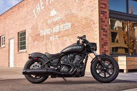

კრუიზერები
კრუიზერი კომფორტული მოტოციკლია, რომელიც შექმნილია ხანგრძლივი და მშვიდი მგზავრობისთვის.
მას ახასიათებს დიდი ძრავა, ფართო სავარძლები და კლასიკური დიზაინი. ხშირად ირჩევენ მოტოციკლის მოყვარულები, ვისაც მოგზაურობა უყვარს.
კრუიზერი კომფორტული მოტოციკლია, რომელიც შექმნილია ხანგრძლივი და მშვიდი მგზავრობისთვის.
მას ახასიათებს დიდი ძრავა, ფართო სავარძლები და კლასიკური დიზაინი. ხშირად ირჩევენ მოტოციკლის მოყვარულები, ვისაც მოგზაურობა უყვარს.